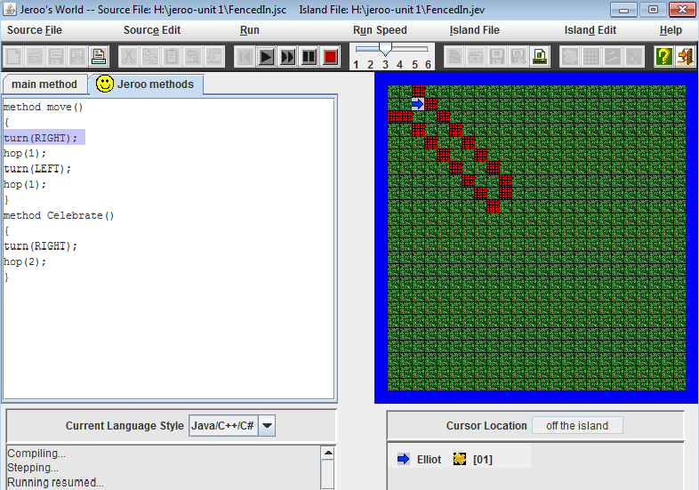
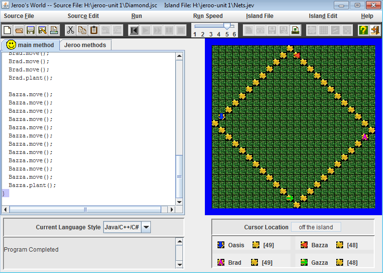
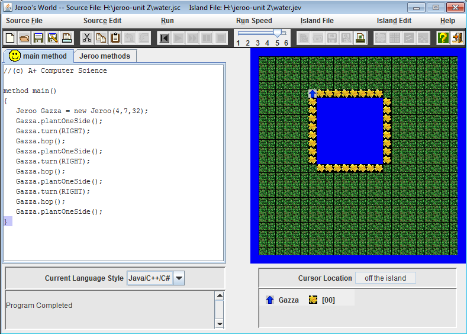
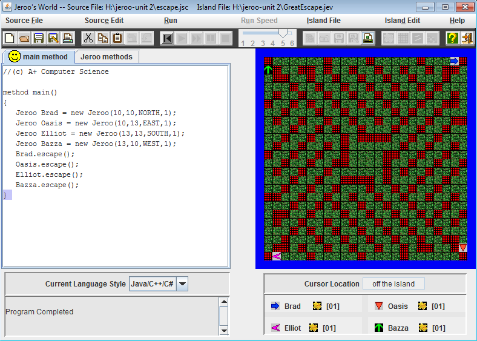

Units 1-4
Description
Jeroo is a java based codeing program, you put in code to tell the jeroo (the arrow) what to do and were to go to solve some sort of problem. There are infinate ways to solve the same problem so everyones code is unique, but in units 1-4 our goal was to find the most efficient way to solve solve whatever the problem might be. In unit one we used basic action methods to move our jeroo. In unit two we learned how to use and apply while and if statements to loop and therefor simplifie our code. In unit three we refined our application of while and if statements for more complex problems. in unit four we were introduced to the recursive method which allows the code to loop into itself further more simplifieing our code.
Concepts Learned
- Instantiation - A instantiation statement is used to create a Jeroo object.
- Action Methods - The seven action methods control the movements of the Jeroos and their handling of the flowers.
- Methods - A Jeroo program must contain exactly one main method, and usually contains several user-defined Jeroo methods.
- Boolean Methods and Expressions - Each boolean method returns a value of true of false, Boolean methods are used to create Boolean expressions. This creates loops within the code.
- Control Structures - A control structure determines the order in which statements will be executed.
Unit-1


Unit-2

